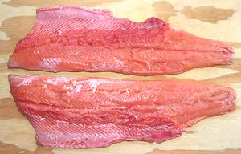

This is the smallest, and most numerous, of the Wild Salmon. It inhabits the Arctic Ocean from above western Canada, Alaska and eastern Siberia. It is most numerous on the south side of Alaska, and extends down to Korea in Asia, and the Sacramento River in California, and sometimes farther south. They were accidently introduced to the American Great Lakes, and have established populations there.
Aside from commercial catch, these fish are a very popular for sports fishing. The record weight is 15 pounds, but they are normally about 20 inches and a little under 4 pounds. The photo specimen, a nearly ready to spawn male, wild caught in Canada, was 22 inches long and weighed 4 pounds 3 ounces.
These salmon live only two years, spawning and dieing in their second year. They are caught mainly during their spawning period (July to September) when they return from the sea to fresh water. There are odd and even year populations. Sometimes Pink Salmon cross breed with Chum Salmon (Oncorhynchus keta), producing sterile hybrids called Miko Salmon.
More on Varieties of Fish
(very large page).
The flesh of Pink Salmon is lighter than larger salmon, tender and delicate, with a lot less oil. It holds together well for any method of cooking. When poached it flakes apart easily at the table into moderately thick flakes. When pan fried, it more breaks apart rather than flaking, but still does so easily. It is less suitable for grilling than fattier salmon. The skin can be left on for any method of cooking. Color will vary with the fish's diet, and has no effect on flavor or quality.
Buying: I have found whole fish in one of the Philippine markets here in Los Angles (Eagle Rock). The photo specimen was 22 inches long and weighed 4 pounds 3 ounces. It was purchased in late August for 2019 US $2.99 per pound, wild caught in Canada. You will find only males in the market - the females have been harvested of their eggs, then sold as fillets. Only the males get a hump back when ready to spawn.
Scales: The scales are tiny, soft and thin, scraping off almost as a gray slush. I have found it more effective to shave them off with the sharp edge of my prep knife rather than scraping in the usual manner.
Cleaning: Nothing particularly difficult here except the length of the body cavity. There is a long membrane that has to be broken through and scraped out, along with the blood works between it and the backbone. The gills pull a bit hard and tend to break up, but since you're unlikely to cook this fish head-on, you might as well remove it right away, dipping the knife under the collar to get the most flesh.
Ribs: Once you have the fish cleaned, the body cavity will open up wide. The ribs are many, thread thin, and long, but they are very easy to find and remove. With long nose pliers, just give them a little twist to break them from the backbone and pull them out. They will give little resistance.
 Fillet: Except for the size, this is not a difficult fish to fillet in the usual manner. When you jump over the backbone at the tail and work forward, when you get to the body cavity, the ribs have already been removed, so just cut the fillet away from the backbone. Now for the bad news. There is a row of pinbones for the first 2/3s of the fish. You can see them as tiny white dots on the fillet. They are a good inch long and almost horizontal pointed toward the tail. Fortunately, they are easy to find and pull straight forward very easily, taking no flesh.
Skin: The skin has a more intense flavor than the flesh, but is not at all offensive. It has very little shrink, so pieces of fillet can be pan fried or poached skin-on with little or no distortion, much like Rainbow Trout. While there is little need to remove the skin, it is easily removed using the long knife and cutting board Method. It is thin, but strong, and can be removed with very little loss of flesh.
Yield: A 4 pound 2 ounce fish yielded 2 pounds 7 ounces of skin-on fillet (66%), very high for a fish. Skin-off that would be about 2 pounds 2-1/4 ounces (52%), still decent yield.
Stock: The head, bones and fins made a lightly flavored stock, almost clear with no salmon coloration. There will be quite a bit of oil, which you need to remove - use your gravy separator. See our recipe Making Fish Stock for method, and how to store it.
Health & Nutrition: Pink salmon is high in long chain omega 3 fatty acids, EPA and DHA.
sf_salmpkz 082819 - www.clovegarden.com